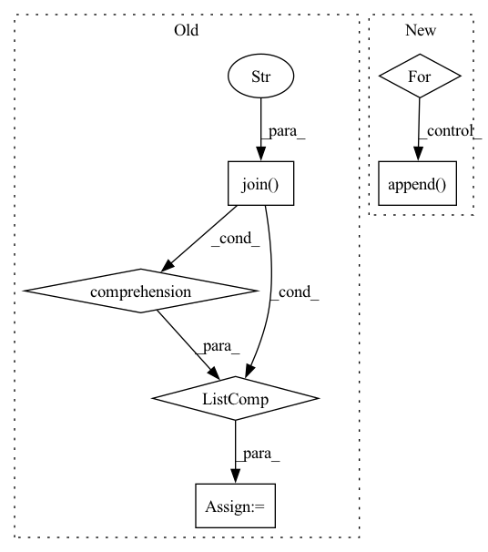

Pattern ID :13938
Before Change
def get_train_valid_data(image_folder, mask_folder):
image_list = [cv2.imread(img) for img in glob.glob(os.path.join(image_folder, "*.png"))]
mask_list = [cv2.imread(img, cv2.IMREAD_GRAYSCALE) for img in glob.glob(os.path.join(mask_folder, "*.png"))]
train_ds = RoofTopDataset(image_list, mask_list, transform=train_trfm)
valid_ds = RoofTopDataset(image_list, mask_list, transform=val_trfm)
return train_ds, valid_ds
After Change
image_files = glob.glob(image_folder + "/*.png")
mask_files = glob.glob(mask_folder + "/*.png")
for images, masks in executor.map(load_img_mask, image_files, mask_files):
image_list.append( images)
mask_list.append(masks)
ds = RoofTopDataset(image_list, mask_list)
In pattern: SUPERPATTERN
Frequency: 3
Non-data size: 6
Instances Fragment ID: 46374355
Project Name: chanceqz/rooftopsegmatation
Commit Name: 73672cb80953fd4a7f7faea25857fa5353b4d5ea
Time: 2021-04-26
Author: qz_gis@163.com
File Name: roottop_dataset.py
M Class Name: AnonimousClass
N Class Name: AnonimousClass
M Method Name: get_train_valid_data(2)
N Method Name: get_train_valid_data(2)
M Parent Class:
N Parent Class:
M File Name: roottop_dataset.py
N File Name: roottop_dataset.py
M Start Line: 76
M End Line: 81
N Start Line: 92
N End Line: 104
Before Change
def get_train_valid_data(image_folder, mask_folder):
image_list = [cv2.imread(img) for img in glob.glob(os.path.join(image_folder, "*.png"))]
mask_list = [cv2.imread(img, cv2.IMREAD_GRAYSCALE) for img in glob.glob(os.path.join(mask_folder, "*.png"))]
train_ds = RoofTopDataset(image_list, mask_list, transform=train_trfm)
valid_ds = RoofTopDataset(image_list, mask_list, transform=val_trfm)
return train_ds, valid_ds
After Change
image_files = glob.glob(image_folder + "/*.png")
mask_files = glob.glob(mask_folder + "/*.png")
for images, masks in executor.map(load_img_mask, image_files, mask_files):
image_list.append( images)
mask_list.append(masks)
ds = RoofTopDataset(image_list, mask_list)
Fragment ID: 46374354
Project Name: chanceqz/rooftopsegmatation
Commit Name: 73672cb80953fd4a7f7faea25857fa5353b4d5ea
Time: 2021-04-26
Author: qz_gis@163.com
File Name: roottop_dataset.py
M Class Name: AnonimousClass
N Class Name: AnonimousClass
M Method Name: get_train_valid_data(2)
N Method Name: get_train_valid_data(2)
M Parent Class:
N Parent Class:
M File Name: roottop_dataset.py
N File Name: roottop_dataset.py
M Start Line: 76
M End Line: 81
N Start Line: 92
N End Line: 104
Before Change
if osp.isfile(p) and p.endswith(".py"):
plugins.append((plugins_dir, plugin_name, None))
elif osp.isdir(p):
plugins += [(plugins_dir,
osp.splitext(plugin_name)[0] + "." + osp.basename(p),
osp.splitext(plugin_name)[0]
)
for p in glob(osp.join(p, "*.py"))]
return plugins
@classmethod
def _import_module(cls, module_dir, module_name, types, package=None):After Change
plugins = []
for pattern in ("*.py", "*/*.py"):
for path in glob.glob(
osp.join(glob.escape(plugins_dir), pattern)):
if not osp.isfile(path):
continue
path_rel = osp.relpath(path, plugins_dir)
name_parts = split_path(osp.splitext(path_rel)[0])
// a module with a dot in the name won"t load correctly
if any("." in part for part in name_parts):
log.warning(
"Python file "%s" in directory "%s" can"t be imported "
"due to a dot in the name; skipping.",
path_rel, plugins_dir)
continue
plugins.append( ".".join(name_parts))
return plugins
@classmethod Fragment ID: 46374352
Project Name: openvinotoolkit/datumaro
Commit Name: 7a1a0e1dd7bf603ae02ad96b49516000f4f575fe
Time: 2021-10-21
Author: roman.donchenko@intel.com
File Name: datumaro/components/environment.py
M Class Name: Environment
N Class Name: Environment
M Method Name: _find_plugins(1)
N Method Name: _find_plugins(1)
M Parent Class:
N Parent Class:
M File Name: datumaro/components/environment.py
N File Name: datumaro/components/environment.py
M Start Line: 112
M End Line: 126
N Start Line: 111
N End Line: 131
Before Change
// self.images.append(os.path.join(root_dir, row[0] + ".jpg"))
// self.masks.append(os.path.join(root_dir, row[0] + "_m.png"))
ids = os.listdir(os.path.join( root_dir, "images" ) )
self.images = [os.path.join(root_dir, "images", image_id) for image_id in ids]
self.masks = [os.path.join(root_dir, "masks", image_id) for image_id in ids]
After Change
with open(file_path, "r") as f:
csv_reader = csv.reader(f)
for index, row in enumerate(csv_reader):
self.images.append(os.path.join(root_dir, row[0] + ".jpg"))
self.masks.append( os.path.join(root_dir, row[0] + "_m.png"))
def labels(self):
return list(CLASSES_TO_IDX.keys())
Fragment ID: 46374357
Project Name: biasvariancelabs/aitlas
Commit Name: 9d2d43424f557c2b37c41651c8c8e2fab652a60e
Time: 2020-11-01
Author: ivica.dimitrovski@gmail.com
File Name: aitlas/datasets/landcover_ai.py
M Class Name: SegmentationDataset
N Class Name: SegmentationDataset
M Method Name: load_dataset(3)
N Method Name: load_dataset(3)
M Parent Class: BaseDataset
N Parent Class: BaseDataset
M File Name: aitlas/datasets/landcover_ai.py
N File Name: aitlas/datasets/landcover_ai.py
M Start Line: 62
M End Line: 64
N Start Line: 52
N End Line: 58